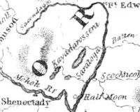

Kayaderosseras
A large tract of land north of the Mohawk River and west and south of the Hudson that was cut by the Kayaderosseras Creek as it flowed into Saratoga Lake. This part of old Albany County originally was patented between 1703 and 1708. But title was not confirmed until 1768 and the lands were surveyed and partitioned in 1771. Settlement dates to about 1772!
The thirteen original petitioners included the Attorney General, important New Yorkers, Albany residents Nanning H. Visscher and Johannes Beekman, and Albany native Rip Van Dam - then a Manhattan businnessman and member of the governor's Council.
Contemporaries argued that the grant encompassed the lands north of the Mohawk and West of the Hudson - a huge chunk of frontier real estate. The patent ultimately encompassed more than 250,000 acres of land. Sir William Johnson is credited for having that acreage reduced to 23,000 acres in 1760.
The pending patent was an issue that required special meetings at the Albany Congress in 1754.
A number of early Albany families (including the Glens) shared in the complicated partition of this patent! Albany merchant Simon J. Veeder was able to acquire sixteen lots in 28 transactions during 1771.
An Indian name, many spellings are encountered in the historical record and today!

notes
Sources: The patenting process is fully described in a puzzling manner in an adaptation of Sylvester's History of Saratoga County that is available online! The most interesting analysis of the patent appears in Georgiana C. Nammack, Fraud, Politics, and the Dispossession of the Indians: The Iroquois Land Frontier in the Colonial Period (Norman, OK, 1969), chapter five. Online resources: East Line
Original Description: "By his Excellency, Edward, Viscount Cornbury, Captain-General and Governor-in-Chief of the Provinces of New York, New Jersey, and Territories depending thereon in America, and Vice-Admiral of the same, etc., in council, this 22d day of October, 1701.
"To Major Bickley, Esq., Attorney-General of the Province of New York:
You are hereby required to prepare a draft of letters-patent for Naning Harmanse, Johannes Beekman, Rip Van Dam, Ann Bridges, Major Bickley, Peter Fauconnier, Adrian Hoghland, Johannes Fisher, John Tuder, Ixris Hoghland, John Stevens, and John Gatham, for all that tract of land situate, lying, and being in the county of Albany, called Kayadarossera, alias Queen's Borough, beginning at a place on Schenectady river, about three miles distant from the southwesterly corner of the bounds of Nestigion's, the said place being the southwesterly corner of the patent lately granted to Naning Harmanse, Peter Fauconnier, and others; thence along the said Schenectady river westerly to the southeastly corner of a patent lately granted to William Apple; thence along the easterly, northerly, and westerly lines of said William Apple's patent down to the above said river; thence to the Schenectady bounds, or the southeasterly corner of said patent on said river, so along the easterly, northerly, and westerly bounds thereof down to the said river again; thence along the said river up westerly to the southeasterly bounds of a tract of land lately granted to Ebenezer Willson and John Aboot, and so along the said patent round to the southwesterly corner thereof on said Schenectady river; thence continuing to run westerly up along said Schenectady river to a place or hill called Iweetowando, being five miles distant, or thereabouts, from the said southwesterly corner of said Willson's and Aboot's patent; thence northerly to the northwestmost head of a creek called Kayaderossera, about fourteen miles, - more or less: thence eight miles more northerly; thence easterly or northeasterly to the third falls on Albany river, about twenty miles, - more or less; thence along the said river down southerly to the northeasterly bounds of Saratoga; thence along said Saratoga's northerly, westerly, and southerly bounds on said river; thence to the northeasterly corner of Anthony Van Schaick's land, on said river, so northerly and westerly along said Van Schaick's patent to the northeast corner of the above said patent granted to Naning, Fauconnier, and others; thence along the northerly and westerly bounds thereof, down to the above said river of Schenectady, being the place where it first begun. To hold to the said Naning Harmense, Johannes Beekman, Rip Van Dam, Ann Bridges, Major Bickley, Peter Fauconnier, Adrian Hoghland, Johannes Fisher, John Tuder, Joris Hoghland, John Stauen, and John Gatham, their heirs and assigns forever, at and under the yearly quitrent of four pounds . . . and for so doing this shall be your sufficient warrant. Dated as above."
Transcribed from the New York Colonial Documents, Land Papers, v. 4, p. 165.
Home | Site Index |
Navigation | Email |
New York State Museum
posted: 9/20/03
|